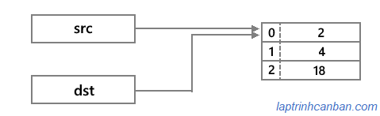
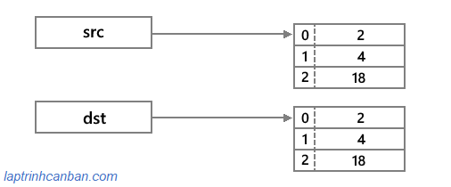

Hướng dẫn cách sao chép mảng trong Java. Bạn sẽ học được 3 phương pháp cơ bản để sao chép mảng trong Java sau bài học này.
Chúng ta có 3 phương pháp cơ bản để sao chép mảng trong Java như sau:
- Sao chép mảng trong Java bằng cách copy từng phần tử
- Sao chép mảng trong Java bằng phương thức System.arraycopy
- Sao chép mảng trong Java bằng phương thức Arrays.copyOf
Cần lưu ý là chúng ta không dùng toán tử gán để sao chép mảng trong Java, và 3 phương pháp cơ bản ở trên chỉ giới hạn sử dụng trong các mảng có giá trị thuộc kiểu dữ liệu nguyên thủy mà thôi.
Gán mảng cho một mảng khác trong Java
Trong Java, bằng cách sử dụng toán tử gán =, chúng ta có thể gán một mảng cho một mảng khác.
Tuy nhiên cần lưu ý là việc gán mảng chỉ tạo ra mối quan hệ tham chiếu của hai biến mảng tới cùng một bản thể mảng được lưu trong bộ nhớ máy tính, chứ không phải là copy mảng đó.
Ví dụ, chúng ta có xử lý gán mảng cho một mảng khác trong Java như sau:
public class Main |
Thoạt nhìn thì cách gán mảng cho một mảng khác này giống như chúng ta đang copy mảng vậy. Tuy nhiên do mảng thuộc kiểu dữ liệu đối tượng nên giá trị được lưu trong biến mảng chỉ là địa chỉ của mảng trên bộ nhớ máy tính. Do vậy khi gán một mảng cho một mảng khác, thực ra chúng ta đang tạo thêm một mối quan hệ tham chiếu từ một biến mảng tới địa chỉ mảng ban đầu, chứ không phải là copy mảng ban đầu.

Bởi thế, nếu chúng ta thay đổi giá trị của mảng ban đầu, thì kết quả mảng được gán cũng sẽ bị thay đổi theo.
public class Main |
Do vậy trong Java, để sao chép mảng thì chúng ta không dùng toán tử gán, mà sẽ sử dụng tới một trong ba phương pháp sau đây:
Sao chép mảng trong Java bằng cách copy từng phần tử
Phương pháp đầu tiên để sao chép mảng trong Java, đó chính là copy từng phần tử của mảng.
Đây là cách copy mảng trong Java đơn giản và dễ hiểu nhất. Chúng ta tạo một mảng mới, sau đó sử dụng vòng lặp for để lấy và sao chép từng phần tử trong mảng cũ và gán vào mảng mới với index tương đương.
Với phương pháp này thì chúng ta cần phải khai báo và tạo ra bản thể của mảng kết quả.
Cụ thể chúng ta viết chương trình sao chép mảng trong Java như sau:
public class Main |
Bạn có thể thấy mảng cũ đã được copy sang mảng mới với các giá trị giống nhau rồi phải không nào.
Với phương pháp copy này, do từng phần tử trong mảng kết quả sẽ được gán giá trị được sao chép từ mảng ban đầu, nên mảng kết quả và mảng ban đầu sẽ trở thành 2 mảng độc lập và không mang quan hệ tham chiếu. Do đó nếu mảng ban đầu có thay đổi giá trị thì mảng kết quả cũng sẽ không bị ảnh hưởng.

Tuy nhiên cần lưu ý chúng ta chỉ có thể sử dụng phương pháp này với các mảng chứa giá trị thuộc kiểu dữ liệu nguyên thủy như int, double, boolean v.vv mà thôi. Đối với các mảng chứa giá trị thuộc kiểu dữ liệu đối tượng trong Java như object của class chẳng hạn thì chúng ta không thể dùng phương pháp này.
Sao chép mảng trong Java bằng phương thức System.arraycopy
Phương pháp thứ hai để sao chép mảng trong Java, đó chính là sử dụng phương thức System.arraycopy.
Chúng ta sử dụng phương thức System.arraycopy để copy mảng trong Java với cú pháp sau đây:
System.arraycopy(Object src, int srcPos, Object dest, int destPos, int length);
Trong đó:
- scr là mảng nguồn cần sao chép
- srcPos là vị trí bắt đầu sao chép trong mảng nguồn
- dest là mảng đích chứa kết quả sao chép
- destPos là vị trí bắt đầu dán kết quả vào mảng đích
- length là số phần tử được copy từ mảng nguồn
Phương thức System.arraycopy sẽ trả về một số xử lý ngoại lệ sau:
- IndexOutOfBoundsException: việc sao chép vượt quá phạm vi dữ liệu của mảng
- ArrayStoreException: kiểu dữ liệu khác nhau dẫn đến không thể copy mảng
- NullPointerException: Giá trị của src hoặc dest là null
Giống như với cách copy mảng đầu tiên thì chúng ta cũng cần phải khai báo và tạo ra bản thể của mảng kết quả trước khi tiến hành sao chép mảng như sau:
public class Main |
Kết quả:
2 |
Giống với phương pháp đầu tiên thì phương pháp copy mảng thứ 2 này cũng sẽ tạo ra các bản thế khác nhau của mảng, bởi vậy mảng ban đầu và mảng kết quả không liên quan tới nhau, nên việc thay đổi mảng ban đầu cũng không thay đổi mảng kết quả.
Và tương tự phương pháp đầu tiên, chúng ta cũng chỉ có thể dùng cách copy này với các mảng chứa giá trị thuộc kiểu dữ liệu nguyên thủy mà thôi.
Sao chép mảng trong Java bằng phương thức Arrays.copyOf
Phương pháp thứ ba để sao chép mảng trong Java, đó chính là sử dụng phương thức Arrays.copyOf.
Để sử dụng được phương thức này thì chúng ta cần phải import class Arrays trước với lệnh sau:
import java.util.Arrays; |
Sau đó chúng ta sử dụng phương thức Arrays.copyOf để copy mảng trong Java với cú pháp sau đây:
Arrays.copyOf(int[] scr, int newLength);
Trong đó:
- scr là mảng nguồn cần sao chép
- newLength là số phần tử được copy từ mảng nguồn
Phương thức Arrays.copyOf sẽ trả về một số xử lý ngoại lệ sau:
- NegativeArraySizeException: giá trị của newLength là số âm
- NullPointerException: Giá trị của src là null
Khác với hai cách copy mảng ở trên, chúng ta không cần phải tạo ra bản thể của mảng kết quả sau khi khai báo nó, mà có thể lưu trực tiếp kết quả copy vào mảng kết quả như sau:
import java.util.Arrays; |
Kết quả:
2 |
Giống với 2 phương pháp ở trên thì phương pháp copy mảng thứ 3 này cũng sẽ tạo ra các bản thế khác nhau của mảng, bởi vậy mảng ban đầu và mảng kết quả không liên quan tới nhau, nên việc thay đổi mảng ban đầu cũng không thay đổi mảng kết quả.
Và tương tự phương pháp đầu tiên, chúng ta cũng chỉ có thể dùng cách copy này với các mảng chứa giá trị thuộc kiểu dữ liệu nguyên thủy mà thôi.
Sao chép mảng trong Java thuộc kiểu dữ liệu tham chiếu
Ở phần trên Kiyoshi đã trình bày 3 phương pháp cơ bản để copy sao chép mảng trong Java rồi. Tuy nhiên cần lưu ý là cả ba phương pháp trên đều chỉ có thể sử dụng để copy các mảng có giá trị thuộc kiểu dữ liệu nguyên thủy mà thôi.
Để sao chép các mảng có giá trị thuộc kiểu đối tượng, ví dụ như là object được tạo ra từ các class chẳng hạn, chúng ta cần phải sử dụng tới các phương pháp khác, đó chính là shallow copy và deep copy trong Java.
Đây là các kiến thức nâng cao liên quan tới cách sử dụng class trong Java, nên chúng ta sẽ cùng tìm hiểu kỹ hơn trong các bài học tiếp theo.
Tổng kết
Trên đây Kiyoshi đã hướng dẫn bạn các cách sao chép mảng trong Java rồi. Để nắm rõ nội dung bài học hơn, bạn hãy thực hành viết lại các ví dụ của ngày hôm nay nhé.
Và hãy cùng tìm hiểu những kiến thức sâu hơn về Java trong các bài học tiếp theo.
HOME>> java cơ bản cho người mới bắt đầu>>12. mảng trong java